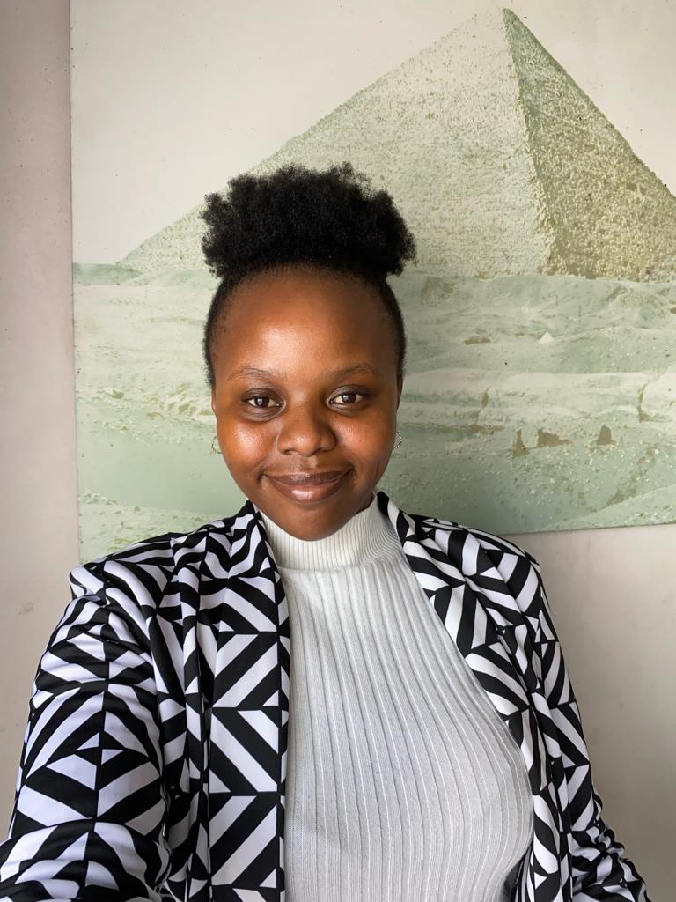

My educational venture has been a hands-on exploration of programming languages and robust software development methodologies.
In the realm of programming languages, I've delved into the intricacies of Java, mastering its syntax and leveraging its object-oriented capabilities to create robust and scalable applications. My experiences with Java have included crafting applications that showcase not only technical proficiency but also an understanding of best practices in software design.
JavaScript has been another cornerstone of my learning journey, and I've applied it extensively to enhance the interactivity and user experience of web applications. From dynamic front-end development to asynchronous server-side operations, my expertise in JavaScript extends across various dimensions of modern web development.
C# has been a fascinating exploration, offering insights into the world of Microsoft technologies. My coursework involved creating applications within the .NET framework, honing my skills in building Windows applications and web services.
SQL has been a powerful tool in my arsenal, enabling me to design and manage databases effectively. My proficiency in crafting complex queries ensures efficient data retrieval and management, crucial for the success of any data-driven application.
In the realm of software development methodologies, I've actively engaged with Agile practices. Coursework and practical projects have exposed me to the iterative and collaborative nature of Agile development. I've participated in simulated sprints, collaborated with team members, and adapted to changing project requirements, all within the Agile framework.
This practical exposure to Agile methodologies has not only equipped me with the technical skills required for software development but has also instilled in me the importance of adaptability, collaboration, and delivering value in incremental stages.

https://github.com/Usenathi19/Academic-Project
Email: usenathimanina@gmail.com